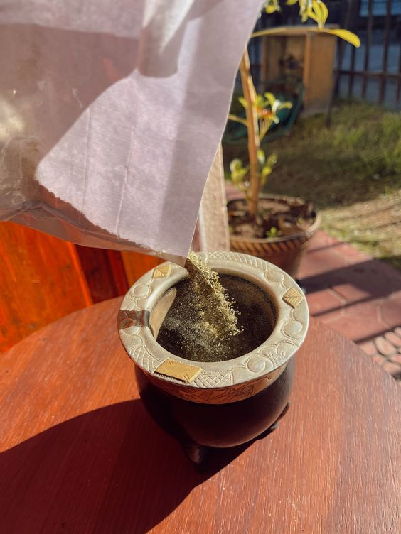

Falso. El polvo de hoja es uno de los componentes más virtuosos de esta infusión, le aporta suavidad y espumosidad. Hace que los mates sean ricos y rendidores.
Rápidamente, una de las empresas acusadas de estafa, donde se produce la yerba , difundió por las redes sociales un comunicado y una serie de videos donde explican que los cuatro componentes principales de la yerba son el palo, la hoja gruesa, la hoja fina y el polvo. "Siguiendo la receta original, cada uno de estos componentes se dosifica con un alto grado de precisión, verificando su porcentaje por personal del Sistema de Aseguramiento de la Calidad", indicaron.
Por otro lado, la empresa también aseguró que cada componente tiene algo para aportar en la yerba. Según la compañía, tanto la hoja gruesa como la hoja fina "aportan intensidad y sabor" y el palo "equilibra la acción entre componentes". Por su parte, el polvo -denominado técnicamente hoja impalpable- es, según Taragüi, "un componente virtuoso que aporta rendimiento, sabor y espumosidad a la infusión". "Ninguno de los componentes de la yerba mate es perjudicial para la salud", concluyeron.
También el Instituto Nacional de la Yerba Mate (INYM) emitió un comunicado donde asegura que según establece el Código Alimentario Argentino en el artículo 1193, la hoja, el polvo y el palo forman parte de la yerba mate elaborada.
La opinión de una especialista
Para comprender a fondo la cuestión sobre los componentes de la yerba mate, Infobae consultó a Valeria Trapaga, la primer sommelier especializada en cata de yerba mate del mundo, quien aseguró que el fondo de la cuestión es el desconocimiento sobre la yerba que hay entre los consumidores.
Si bien explica que los distintos tipos de yerba y marcas pueden variar en contenido de alguno de los componentes, determinando su estilo, la hoja impalpable, fina, gruesa y el palo son los protagonistas de una yerba mate correctamente elaborada. En esta dinámica, el polvo es para ella un ingrediente preponderante en un buen mate.
"El polvo como componente es muy importante porque aporta espumosidad, aroma y cebadas muy duraderas. Hace que los mates sean rendidores y las cebadas parejas. Al final, cuando uno tiene una cebada completa con una yerba mate con un contenido de polvo interesante, puede determinar que el componente polvo termina siendo un componente de dilución que equilibra la infusión hacia la suavidad".
Sin embargo, no todo lo que se percibe como polvo es bueno.
"El punto más importante respecto de esta crítica, es que el polvo de la yerba mate para que sea virtuoso, tiene que ser de hoja", explicó Trapaga
"Hay que hacer una gran diferenciación: una cosa es el polvo de hoja de la yerba mate que es la hoja molida a una granulometría muy fina y otra cosa es lo que nosotros llamamos el polvillo, que es el resultado de la manipulación de la molienda en general.
Puede ser barrido, es decir el desecho, lo que queda cuando la yerba está en el secadero por ejemplo. O puede ser palo astillado molido también". En ese caso, según explicó la especialista, el polvillo sí sería un componente que iría en detrimento de la calidad de la yerba.
Trapaga indicó también que la yerba no es perjudicial para la salud. "La yerba mate de calidad no hace mal, tiene un montón de beneficios y nació siendo una pócima para quienes la descubrieron. Un montón de beneficios que también desconocemos los argentinos", dijo. "Por lo tanto, no le cabe ni se merece esta cosa de 'la yerba mate me hace mal'. A lo mejor hacemos nosotros cosas mal alrededor de la yerba mate como calentar el agua excesivamente, no tener los recipientes bien curados o con la higiene correspondiente o le agregamos mucha azúcar al agua caliente y después pensamos que es la yerba lo que nos produce acidez, y es lo demás. La yerba mate tiene muchas propiedades benéficas y hace bien".

Se lo sacude tapando la boca del mate con la palma de la mano, en el caso de que se quiera sacar el polvo de la Yerba Mate.